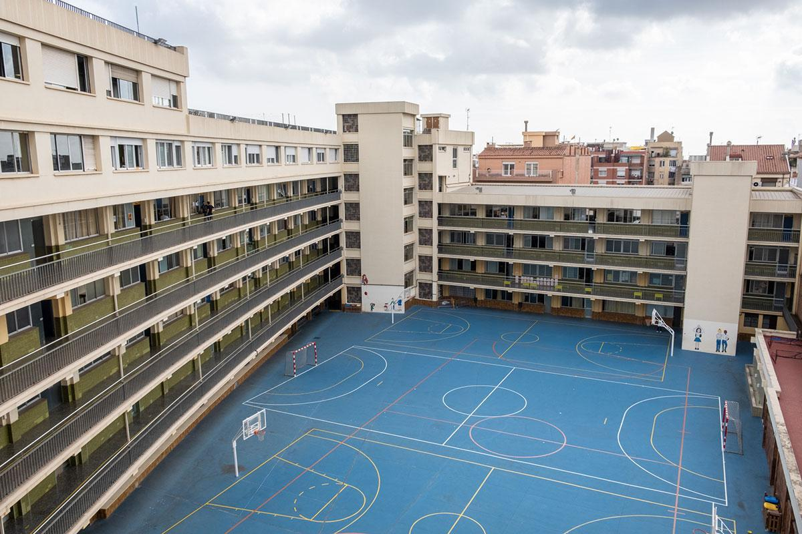

DEVELOPER & DAM STUDENT
Sóc en Marc Martí Sánchez, estudiant de Desenvolupament d’Aplicacions Multiplataforma (DAM) amb una gran passió per la programació i les solucions tecnològiques. M’encanta entendre com funcionen les coses per dins i trobar maneres d’optimitzar processos, fer-los més eficients i aportar-hi un toc creatiu.
Estic en constant aprenentatge, ja sigui explorant noves eines, llenguatges o tecnologies, per millorar les meves habilitats i aportar més valor als projectes en què participo. M’agrada afrontar reptes tècnics, treballar en equip i buscar solucions innovadores que responguin a necessitats reals.
Em considero una persona proactiva, responsable i amb esperit analític, capaç d’adaptar-se a nous entorns i d’aprendre ràpidament. Valoro molt el treball col·laboratiu i la comunicació, ja que crec que les millors idees sorgeixen quan es comparteixen perspectives. Compromès amb el meu creixement professional, el meu objectiu és contribuir al desenvolupament de solucions útils, intuïtives i eficients que tinguin un impacte positiu en la vida dels usuaris. A llarg termini, m’agradaria continuar formant-me i especialitzar-me en àrees com el desenvolupament d’aplicacions mòbils, la intel·ligència artificial o la ciberseguretat.
Suport en la gestió de clients i avaluació de perfils per a la contractació de pòlisses.
Comprensió de la indústria i desenvolupament d'habilitats de comunicació, negociació i resolució de dubtes.


Currículum digital amb HTML i CSS, seccions personals, disseny responsiu i estil professional.
Accedeix al repositori
JavaCar és un sistema de lloguer de vehicles fet en Java. Permet gestionar cotxes, motos i furgonetes disponibles per llogar, calcular els preus de cada lloguer i saber quants ingressos s'han generat.
Accedeix al repositoriTot i que encara no tinc experiència professional formal, sé que tinc fortaleses personals com la constància, la responsabilitat i la motivació per seguir millorant cada dia. M’esforço per aprendre de cada projecte, error o repte, ja que crec fermament que el procés d’aprenentatge és tan important com el resultat final.
El món de la programació m’ofereix moltes oportunitats per créixer, experimentar i aportar valor. M’apassiona veure com una idea pot transformar-se en una aplicació funcional capaç de millorar la vida de les persones o facilitar tasques quotidianes.
Durant el primer any de DAM, he consolidat coneixements tècnics, après a treballar en equip i entès millor el món tecnològic. Ara continuo aprenent i millorant en àrees com la programació d’aplicacions, la gestió de bases de dades i la creació de projectes multiplataforma, amb l’objectiu de desenvolupar solucions útils i innovadores.
El meu objectiu és continuar formant-me, guanyar experiència real en projectes i convertir-me en un professional capaç de crear solucions eficients i creatives amb l’objectiu de crear solucions pràctiques i útils per a les persones i les empreses.
Si tens cap pregunta, proposta o simplement vols saludar, omple el formulari i et respondré el més aviat possible!